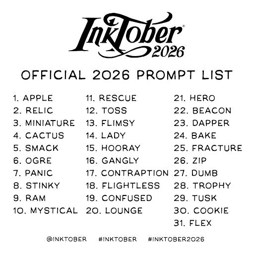

Happy Friday! Thank you for supporting the Daily Bulletin project.
- Suggest improvements to the Daily Bulletin project.
- Unsubscribe if you no longer wish to receive emails from the Daily Bulletin project.
Wellbeing Inspirations
Want to contribute to a future Daily Bulletin? Share your inspirations to give everyone some morning wellbeing energy!
Inktober of the Day

Inktober is a global month-long art challenge held every October where participants create one ink drawing per day for 31 days. For every day this week, I will find media related to that prompt.
Friday - 16th Gangly
Craiglockhart - Brian Johnstone
Maybe they’re here somewhere, lost in these crowds of students, informal in their tweeds, plus fours –
Sassoon, the elder, Sunday golfer; Owen, bookish, gangly, pale – mingling with the queue for the refectory,
snatching nervously at fags, ignoring notices forbidding all those here to smoke. You catch a glimpse
you think, later, in the distance – backs straight, military haircuts – turning down a corridor you glance along
but they’re not there. No, no-one is, though low light slants through window frames, plants these crosses on the wall.
Shared by Lina.
Delicious Dinings
| Day | Meal | Options |
|---|---|---|
| Fri | Breakfast | Burrito |
| Lunch | Fish & Chips | |
| Crispy Buttermilk Quorn 🌱 | ||
| Dinner | Vegan Chow Mein Noodles 🌱 | |
| Crispy Buttermilk Quorn 🌱 | ||
| Sat | Breakfast | Hot Breakfast |
| Lunch | BBQ Beef Burgers | |
| BBQ Quorn Burgers 🌱 | ||
| Dinner | Vegetarian Cottage Pie 🌱 | |
| Braised Red Cabbage 🌱 |
The catering team would like to remind everyone to wash their hands before coming to the dining hall, and to refrain from eating in the servery area. Thank you!
Retrieved from Shared Weekly Menu. For reference only; accuracy not guaranteed.
Important Events
| Day | Time | Event | Location |
|---|---|---|---|
| Fri | 16:00–17:00 | Cafe Concert | Glass Room |
| 20:00–22:00 | Hideout | Moondance | |
| 20:30–22:00 | Percentage Ball | Bradenstoke | |
| Sat | 18:30–19:30 | P6 Human Library | Bradenstoke |
Retrieved from What's On This Week.
Today in History
- 1384 – Jadwiga was officially crowned as "King of Poland" instead of "Queen" to reflect the fact that she was a sovereign in her own right.
- 1875 – Brigham Young University was founded in Provo, Utah, United States.
- 1926 – Háry János , a Hungarian folk opera by Zoltán Kodály, was premiered at the Royal Hungarian Opera House in Budapest.
- 1950 – The first novel of the The Chronicles of Narnia series by C. S. Lewis, The Lion, the Witch and the Wardrobe, was published in the United Kingdom.
- 2017 – The Maltese journalist and anti-corruption activist Daphne Caruana Galizia was killed in a car bomb attack in Bidnija.
Retrieved from Wikipedia.